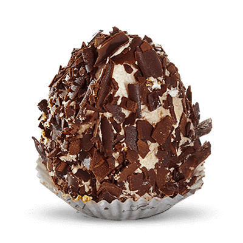

Merveilleux de chez Romain

ingrédients
Pour les meringues à préparer la veille au soir pour être tranquille :
- 3 blancs d’œufs
- 150 g de sucre
recette
Monter les blancs en neige, lorsqu'ils sont bien mousseux incorporer le sucre cuillère après cuillère
puis continuer à fouetter 5 à 8 minutes. La meringue doit être bien brillante et bien ferme.
A l'aide d'une poche à douille lisse, former juste des ronds plats de 4 à 5 cm de diamètre. Si il y
a la petite pointe comme moi, on enlèvera celle-ci au moment de garnir.